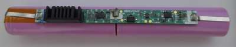
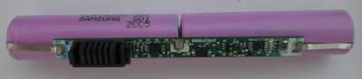
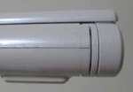

Steward
分享是一種喜悅、更是一種幸福
微電腦 - Onkyo BX407A4 - Samsung 18650 3.7V 2600mA電池
由於司徒入手的BX407A4機器是屬於二手機器，電池已經沒有任何續航能力，因此，司徒只好自己手動更換它，更換的難度其實不大，加上司徒已經擁有之前更換Mbook M1機器電池的經驗，所以更換BX407A4機器電池可以說是相當得心應手
原廠電池(Samsung 18650 3.7V 2600mA)

更換後的電池(Samsung 18650 3.7V 2600mA)

由於司徒在更換Mbook M1機器的電池後，發現更換後的電池太過膨脹，導致翻蓋的時候都相當難翻蓋，因此，對於BX407A4機器的更換盡量將焊錫的厚度變薄，希望它可以跟原廠的電池一樣厚，加上BX407A4機器的電池座空間有間隙，因此，讓更換的電池依然可以輕鬆裝入並且沒有難翻蓋的問題
